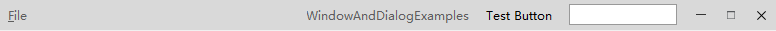

QCtmTitleBar Class
QCtmWindow 和 QCtmDialog 的自定义标题栏. More...
| Header: | #include <QCtmTitleBar.h> |
| Inherits: | QWidget |
Properties
- iconIsVisible : bool
Public Functions
| QCtmTitleBar(QWidget *parent = Q_NULLPTR) | |
| virtual | ~QCtmTitleBar() |
| bool | iconIsVisible() const |
| const QSize & | iconSize() const |
| QMenuBar * | menuBar() const |
| void | setIconSize(const QSize &size) |
| void | setIconVisible(bool show) |
| void | setMenuBar(QMenuBar *menu) |
Signals
| void | iconSizeChanged(const QSize &size) |
Reimplemented Protected Functions
| virtual void | actionEvent(QActionEvent *event) override |
| virtual bool | eventFilter(QObject *watched, QEvent *event) override |
| virtual void | paintEvent(QPaintEvent *event) override |
| virtual void | showEvent(QShowEvent *event) override |
Detailed Description
Note: 最大化，最小化，关闭按钮等显示控制由 QWidget::windowFlags 决定，图标显示由 QWidget::windowIcon 控制，标题栏文字由centralWidget的QWidget::windowTitle决定.
截图:

Property Documentation
iconIsVisible : bool
是否显示图标.
Access functions:
| bool | iconIsVisible() const |
| void | setIconVisible(bool show) |
Member Function Documentation
QCtmTitleBar::QCtmTitleBar(QWidget *parent = Q_NULLPTR)
构造函数 parent.
[virtual] QCtmTitleBar::~QCtmTitleBar()
析构函数.
[override virtual protected] void QCtmTitleBar::actionEvent(QActionEvent *event)
[override virtual protected] bool QCtmTitleBar::eventFilter(QObject *watched, QEvent *event)
Reimplements: QObject::eventFilter(QObject *watched, QEvent *event).
bool QCtmTitleBar::iconIsVisible() const
返回是否显示图标.
Note: Getter function for property iconIsVisible.
See also setIconVisible.
const QSize &QCtmTitleBar::iconSize() const
返回Action图标大小.
Note: Getter function for property iconSize.
See also setIconSize.
QMenuBar *QCtmTitleBar::menuBar() const
返回菜单栏, 当菜单栏对象不存在时，自动创建并返回一个新的菜单栏.
See also setMenuBar.
[override virtual protected] void QCtmTitleBar::paintEvent(QPaintEvent *event)
void QCtmTitleBar::setIconSize(const QSize &size)
设置Action图标大小 size.
Note: Setter function for property iconSize.
See also iconSize.
void QCtmTitleBar::setIconVisible(bool show)
设置是否显示图标 show.
Note: Setter function for property iconIsVisible.
See also iconIsVisible().
void QCtmTitleBar::setMenuBar(QMenuBar *menu)
设置菜单栏 menu, 当 menu 为nullptr时删除菜单栏.
See also menuBar.